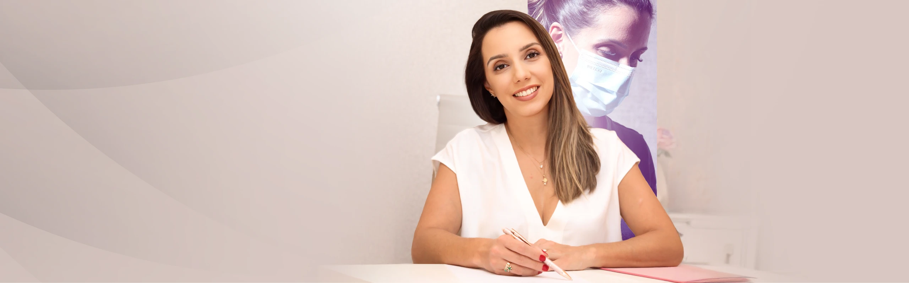
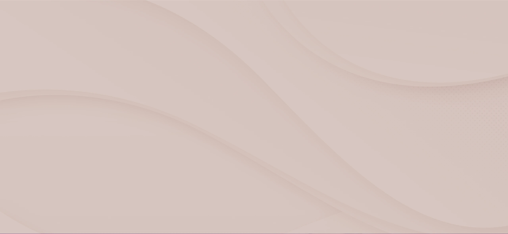
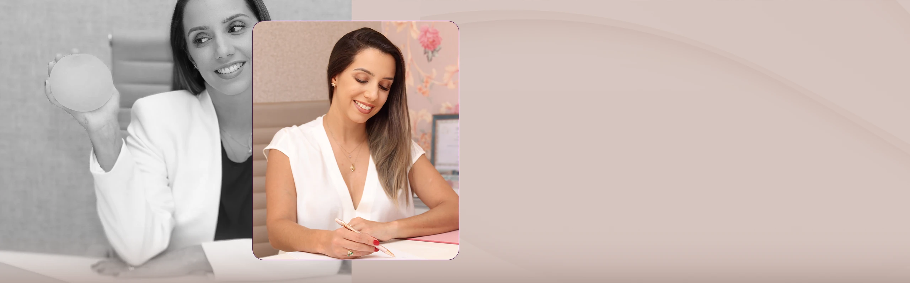

Paleta de cores
Medida no navegador: fundos ponderados pela área ocupada, textos pela quantidade de caracteres. Destaques reúnem cores saturadas e fundos de botão.
Fundos
#D8C7C1
Fundo · 55.6%
rgb(216, 199, 193)
rgb(216, 199, 193)
#4B0F55
Fundo · 24.9%
rgb(75, 15, 85)
rgb(75, 15, 85)
#F0DBD4
Fundo · 14.6%
rgb(240, 219, 212)
rgb(240, 219, 212)
#FFFFFF
Fundo · 4.9%
rgb(255, 255, 255)
rgb(255, 255, 255)
Textos
#4B0F55
Texto · 61.5%
rgb(75, 15, 85)
rgb(75, 15, 85)
#E6E6E6
Texto · 20.0%
rgb(230, 230, 230)
rgb(230, 230, 230)
#FFFFFF
Texto · 18.4%
rgb(255, 255, 255)
rgb(255, 255, 255)
Destaques
#4B0F55
Destaque
rgb(75, 15, 85)
rgb(75, 15, 85)
Gradientes
linear-gradient(rgb(216, 199, 193) 0%, rgb(184, 165, 158) 100%)linear-gradient(90deg, rgb(75, 15, 85) 0%, rgb(75, 15, 85) 100%)Tipografia
Poppins · Aa Bb Cc 0123
97% do texto · Se a sua cabeça não desliga, esta página é para você.Sora · Aa Bb Cc 0123
3% do texto · Se a sua cabeça não desliga, esta página é para você.Escala usada (desktop 1440px)
| Tamanho | Peso | Família | Amostra |
|---|---|---|---|
| 48px | 600 | Poppins | Texto de exemplo |
| 43px | 600 | Poppins | Texto de exemplo |
| 41px | 600 | Poppins | Texto de exemplo |
| 30px | 400 | Poppins | Texto de exemplo |
| 23px | 300 | Poppins | Texto de exemplo |
| 22px | 500 | Poppins | Texto de exemplo |
| 18px | 300 | Poppins | Texto de exemplo |
| 18px | 400 | Poppins | Texto de exemplo |
| 18px | 500 | Poppins | Texto de exemplo |
| 17px | 400 | Poppins | Texto de exemplo |
Mobile (390px): 35px/600, 27px/600, 22px/500, 22px/400, 18px/300, 18px/500, 17px/300, 16px/400 · H1 no mobile: sem h1 semântico
Tags
| Tag | Família | Tamanho | Peso | Altura de linha | Espaçamento | Caixa | Cor |
|---|---|---|---|---|---|---|---|
| <h2> | Poppins | 18px | 300 | 25.2px | -0.6px | none | #4B0F55 |
| <h3> | Poppins | 22px | 500 | 26.4px | -1px | none | #FFFFFF |
| <p> | Poppins | 16px | 400 | 24px | -0.5px | none | #E6E6E6 |
Botões
Recriados com os estilos computados reais. Efeitos de hover e animação não aparecem aqui; veja a seção de animações.
Agende sua avaliação
fundo #00000000 · texto #FFFFFF · raio 400px · padding 25px 66px · 18px/500 none · 5x na páginaCards e containers
Card (6x)
Mastopexia com Prótese Reposicionamento e remodelação das mamas, com ou sem implantes, res
raio 16px · sombra none · borda 1px solid rgba(255, 255, 255, 0.14) · 333x298pxBordas, raios e sombras
222px
400px
8px
16px
10%
67px
Sombras
rgba(255, 255, 255, 0.12) 0px 4px 70.6px 18px insetEspaçamentos
- Largura do conteúdo mais comum: 1140px
- Padding vertical das seções (topo/base): 0px/0px (8x)
- Gaps mais usados (flex/grid): 20px, 26px, 5px, 8px
- Altura total da página: 5513px em 8 seções
Estrutura e ritmo de cores das seções
Cada faixa é uma seção de topo, com altura proporcional e a cor ou imagem de fundo real.
1. hero Dra Cecília Borges 800px · padding 0px/0px
2. prova-resultados 20px · padding 0px/0px
3. servicos Resultados Ressignificantes 703px · padding 0px/0px
4. para-quem-e Referência em Procedimentos de Alta Precisão 1074px · padding 0px/0px
5. sobre Este acompanhamento é ideal para você que: 698px · padding 0px/0px
6. localizacao Muito prazer, sou a Dra. Cecília Borges. 800px · padding 0px/0px
7. rodape Nossa Clínica 1358px · padding 0px/0px
8. Todos os direitos reservados © 2026 60px · padding 0px/0px
Animações, ícones e bibliotecas
- Keyframes próprios: brilho, brilho-container, card-pulse
- Animações de entrada do Elementor: nenhuma
- Classes de scroll reveal da casa: scroll-bottom, scroll-left, scroll-right, scroll-top
- Ícones: 25 SVG, 0 ícones de fonte
- Bibliotecas e tags detectadas: ga4, google-ads, happy-addons, jquery, lenis, lottie, meta-pixel, swiper
Snippets da biblioteca presentes nesta página
Imagens do site




